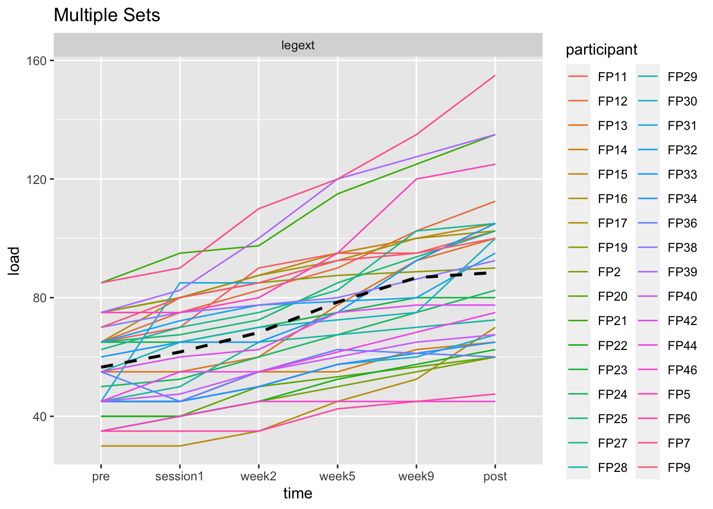

5 Analyse repiterteforsøk
Arbeidskrav 6
6 Introduksjon
Styrketrening har blir en veldig populær måte å trene på. Det er i følge den Norske sportsbransjeforening 65% av alle menn og 55% av alle kvinner mellom 18-29 trener styrketrening (Norsk sportsbransjeforbund. 2020). Hos mennesker vil den gener, varihet, hyppighet, restitusjon, repitisjoner og antall sett ha en påvirkning på hvordan styrkefremgangen påvirkes (Retamess et al. 2019; Timmons, 2011; Morton et al. 2018; Seaborne et al. 2018). Tiden på treningsprugrammet er ofte en brgrensning hos personer, enten det er jobb, skole eller andre viktige ærener som skal gjøres (Choi et al. 2017). Derfor er det interesant å se hvordan man kan kan optimalisere trening for å få ønkete tilpasninger på så lite tid som mulig. Treningsvolum er en begrensning for tid treningen, og måter som kan kutte ned på volum vil være gunstig for tidsbesparing.
Det er flere studier som har sett på hvordan lavt volum kan gi lik gunstige tilpasninger som et moderat treningsvolum er (Cannon og Marino. 2010; Mitchell et al. 2012). Der de konkluderer med at det ikke er en forskjell mellom lav og moderat treningsvolum (Cannon og Marino. 2010; Mitchell et al. 2012). Studier som motsier dette er Rønnestad og Rhea som finner forskjeller mellom lavt og moderat treningsvolum på underekstrimitetene (Rønnestad et al., 2007, s. 157-163; Rhea et al., 2002, s. 525–529). Der forskjellen mellom studiene ligger i intensiteten, hvor Rønnestad har en intensitet på 10-7RM og Rhea har en intensitet på 4-8RM imotsetning til Cannon og Marion ligger på 30%-3 sett og 80%-1 sett av 1RM og Mitchell har gjort det samme om Cannon og Marion. Ut fra studiene kan det tenkes at intensiteten på treningen har hvert for lav hos Cannon og Marion og Mitchell i forhold til Rønnestad og Rhea.
Det derfor vil det være interessant å se på hvordan lavt og moderat trenings volum vil kunne påvirke tilpasninger. Spørsmålet vi stiller oss er: “Hvordan kan ulike sett (et- og tre sett) påvirke mager masse i underekstrimitetene og muskelstyrken i kneekstensjon?”
7 Metode
7.1 Deltagere og studiedesign
41 menn og kvinner ble rekruttert i studien. Deltakeren var røykfrie og i alderen mellom 18-40 år. Kvalifikasjonskravene for deltakerne var intolerant mot lokalbedøvelse, ikke trent mer enn en styrke økt i uka de siste 12 månedene, muskelstyrken måtte være nedsatt på grunn av nåværende og tidligere skader og inntak av medisiner som kan påvirke tilpasningene til styrketrening. Sju av deltakeren ble ekskludert fra dataanalysen fordi de minst 85% av øktene. Grunnen til dette er at fem personer fikk smerter under trening, en fikk skade som ikke var relatert til studien og en overholdet ikke protokollen. Blant de deltakeren var det en som avslo fra å ta biopsi i uke to og tre som ikke fikk tatt blodprøve på grunn av vansker med prøvetaking. Deltakeren hadde tidligere erfaring fra lagsport, langrenn og turn. 20 av deltakeren rapporterte om at det var engasjert i trening da de meldte seg på. Intervensjonen varte i 12 uker. Treningen på beina ble gjort unilateralt for at de kan trene på forskjellig volum på hvert ben. Hos hver person fikk hvert ben et sitt stimuli (et sett og tre sett). Det vil si at hver deltaker gjennomførte begge protokollene. Muskelstyrke vle vurdert ved uke 3, 5 og 9) og etter trenings intervensjonen. Kroppssammensetningen ble målt før og etter trneingsintervensjonen. Dette ble gjort med DXA scan. Muskelbiopsi ble tatt fire ganger i intervensjonen (vastus lateralis): uke null, en time før første økt, etter treningsøkt nr. 5, og etter intervensjonen i uthvilt tilstand. Fra om med uke seks loggførte deltakerene kosten i 4-5 dager etter hviledag en.
7.2 styrketreningsprotokoll
Før hver trenigsøkt besto oppvaringen av 5 min på ergometersykkel (borg skala 12-14), etter de å ha syklet 5 min var neste del av oppvarmingen 10 pushups. Siste del av oppvarmingen vi ca. 50% av 1RM for hver øvelse. Beinøvelsene ble gjennomført på i denne rekkefølgen: unilateralt beinpress, kneefleksjon og kneekstensjon, et sett (singelsett) og fire sett (multisett) per øvelse. Singelsettet bel gjennomføre mellom det andre og tredje settet på multidettet. Etter beinøvelsene hjnenomførte deltakerene bilaterale benkpress, nedtrekk og enten skulder press eller sittende roing. Hvileperioden var mellom 90-180 sek. Treinngns intensiteten bel gradevis økt gjennom intervensjonen, de startet med 10RM de 2 første ukene, etterfulgt 3 uker med 8RM og 7 RM i 7 uker. For å best mulig tilpasse treningen til deltakerens dagsplan ble noen av øktene gjennomført uten tilsyn, 91% av alle øktene ble gjennomført med tilsyn. Da det ikke var noe tilsyn, ble deltakerne bedt om å føre detaljerte logger. Disse ble kontrollert av forskerteamet sammen med deltakerne for å sikre progresjon og etterlevelse av protokollen. Fra den niende treningsøkten hadde hver uke som inneholdt tre økter en økt med redusert belastning, tilsvarende 90 % av forrige økt med samme mål antall repetisjoner. Treningsøkter med maksimal innsats var dte minst 48 timer mellom hver. Treningsøkter med submaksimal innsats (90 %) ble atskilt fra andre økter med minst 24 timer. For å hjelpe til med umiddelbar restitusjon ble det gitt en standardisert drinke etter hver økt som inneholdt 0,15 g kg−1 protein, 11,2 g kg−1 karbohydrater og 0,5 g kg−1 fett.
7.3 Styrketester
Isokinetisk og isometrisk unilateral knefleksjon ble vurdert i et dynamometer (Cybex 6000, Cybex International, Medway, MA, USA). Deltakerne ble sittende og sikret i dynamometeret med kneleddet på linje med dynamometerets rotasjonsakse. Maksimalt isokinetisk dreiemoment ble vurdert ved tre vinkelhastigheter (60°, 120° og 240° neweton-meter per sek). Før testing ble deltakerne informert om testprotokollen ved å utføre tre submaksimale anstrengelser ved hver vinkelhastighet. Deltakerne fikk to forsøk på 60° og tre forsøk på 120 og 240° i denne rekkefølge. Den høyeste verdien ble brukt for statistiske analyser. Etter isokinetisk testing ble maksimalt kontraksjonsmoment (MVC) vurdert ved en knevinkel på 30°. Deltakerne ble bedt om å skyve med maksimal kraft mot spaken i 5 sek. Deltakerne fikk to forsøk, med 30 sek hvile i mellom. Den høyeste verdien ble brukt for analyser.
Maksimal styrke ble vurdert som én repetisjonsmaksimum (1RM) i unilateral benpress og kneekstensjon. Hver testøkt startet med en spesifikk oppvarming med 10, 6 og 3 repetisjoner på 50, 75 og 85 % av forventet maksimum. 1RM bel funnet ved å øke motstanden gradvis inntil vekten ikke kunne utføre i hele bevegelses banen. For hver øvelse ble den høyeste belastningen som ble forsøkt definert som 1RM. Hver deltaker fikk fire til seks forsøk.
Ved baseline ble 1RM, isokinetiske og isometriske styrkevurderinger utført to ganger, med minst 4 dager hvile. Den høyeste verdien oppnådd for hver av testene ble brukt i analyse. Styrketestene ble atskilt med minst 48 timer fra tidligere treningsøkter. En undergruppe av deltakerne (n = 18) utførte styrkevurdering i løpet av studien (i uke 2, 5 og 9). For de resterende deltakerne ble ordinære treningsøkter prioritert når deltakerne gikk glipp av trening eller testing på grunn av sykdom eller planleggingsvansker.
7.4 Kroppsamensetning
Kroppssammensetningen ble gjennomført før og etter intervensjonen av dual-energy røntgenabsorptiometri (DXA) (Lunar Prodigy, GE Healthcare, Oslo, Norge), i henhold til standard protokoll. Før DXA-målinger skulle deltakerene faste i 2 time og ingen fysisk krevende aktivitet siste 48 timer. Kroppssammensetningsmålinger ble gjort dager etter siste treningsøkt. Ut fra DXA vil vi få data på leanmass (mager masse).
7.5 Dataanalyse
I denne studien er det gjort en paret t-test i R-studio. T-test bel tatt på pre- og posttest. Enkelte figurer inneholder flere tester, men i analysen vil det kun bli tatt hensyn til pre- og post test. Variablene som blir brukt i analysen er mager masse og kneekstensjon pra pre- til posttest.
7.5.0.1 tilbakemelding fra Daniel
hvilken variabel ble testet, hvordan beregnes den osv. Hvordan presenteres data
8 Resultat
8.1 Styrktester
Comparison P_Value Mean_Multiple Mean_Single SD_Multiple
1 Multiple vs Single Mager Masse 0.036 289.059 166.265 438.007
SD_Single
1 300.653

statistic p_value df
t 3.46 0.002 31# A tibble: 2 × 3
sets avg_percent_increase percent_difference
<chr> <dbl> <dbl>
1 multiple 56.5 8.7
2 single 52 8.79 Diskuskon
Formålet med studien er i svare på “Hvordan kan et- og tresett påvirke mager masse og muskelstyrken i kneeekstensjon?”. Vi kan se i resultatet at muskelstyrken i 1RM økte med 56% på multi sett og 52% på singel sett. I andre randomiserte studier som har sett på en forskjell lavt og moderat trneingsvolum er (Rønnestad et al., 2007, s. 157-163). Der finner de en forskjell i kneekstensjon, med tilnærmet likt trenigsvolum og treningsprogram. Eneste store forskjell er at Rønnestad har en uke kortere intervensjon, progresjonen i intervensjonen er helt lik som vår studie. Forskjellen i kneefleksjon vil defor underbygge våre resultater som sier at multisett gir bedre tilpassniger på maksimal styrke. På den andre siden viser studier at et lavt og moderat trenigsvolum viser til lik økning i muskelvolum, dette (Cannon og Marino. 2010; Mitchell et al. 2012). En av grunnene skal ta økningen i hos Mitchell kan være være at trneingsbelastnigen ikke var like stor som vi har gjort i denne studien (Mitchell et al. 2012). I studien til Mitchell trente deltakeren på 80% av 1RM til utmattelse, grunnen til det Mitchell ikke finner en forskjell vil kunne være for lav stimuli (Mitchell et al. 2012).
9.1 Mager masse
Analysen fra DXA viser at det er en forskjell på 122,79g i fremgang hvor moderatvolum gir den største fremgangen (p=0,035). Dette støttes også oppunder funnene til Rønnestad som også fant en forskjell mellom lavt og moderat styrketrening på utrnete peroner (Rønnestad et al., 2007). I studien til Rønnestad finner de også en sinifikant forskjell på mager masse (p=0.05), grunnen til dette vil være et likt treningsvolum som i denne studien (Rønnestad et al., 2007).
10 konklusjon
Ut fra studien vår vil et moderat trneingsvolum gi bedre tilpasninger enn et lavt trenigsvolum. Moderatetreningsvolum vil gi en bedre maksimak styrke og magermasse.
10.1 Kilder
Choi J, Lee M, Lee JK, Kang D & Choi JY (2017). Correlates associated with participation in physical activity among adults: A systematic review of reviews and update. https://link.springer.com/content/pdf/10.1186/s12889-017-4255-2.pdf
Hammarstrom D (2019). Benefits of higher resistance-training volume are related to ribosome biogenesis. https://physoc.onlinelibrary.wiley.com/doi/10.1113/JP278455
Morton RW, Murphy KT, McKellar SR, Schoenfeld BJ, Henselmans M, Helms E, Aragon AA, Devries MC, Banfield L, Krieger JW & Phillips SM (2018). A systematic review, meta-analysis and meta-regression of the effect of protein supplementation on resistance training-induced gains in muscle mass and strength in healthy adults. https://bjsm.bmj.com/content/52/6/376
Norsk sportsbransjeforbund, (2020). Norsk sportsbransjeforbund: Slik er nordmenns helse og treningsvaner https://sportsbransjen.no/nyhetsarkiv/slik-er-nordmenns-helse-og-treningsvaner
Rønnestad, B. R., Egeland, W., Kvamme, N. H., Refsnes, P. E., Kadi, F., & Raastad, T. (2007). Dissimilar effects of one-and three-set strength training on strength and muscle mass gains in upper and lower body in untrained subjects. The Journal of Strength & Conditioning Research, 21(1), 157-163.
Timmons JA (2011). Variability in training-induced skeletal muscle adaptation. J Appl Physiol (1985) https://journals.physiology.org/doi/full/10.1152/japplphysiol.00934.2010
Seaborne RA, Strauss J, Cocks M, Shepherd S, O’Brien TD, van Someren KA, Bell PG, Murgatroyd C, Morton JP, Stewart CE & Sharples AP (2018). Human skeletal muscle possesses an epigenetic memory of hypertrophy. https://www.nature.com/articles/s41598-018-20287-3